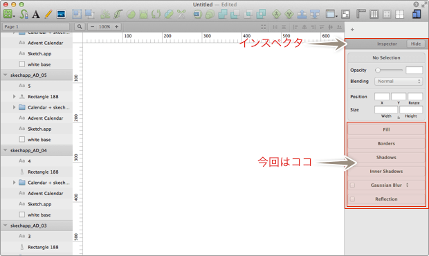
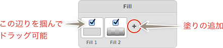
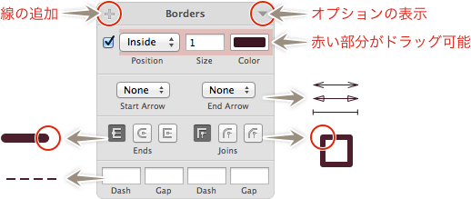
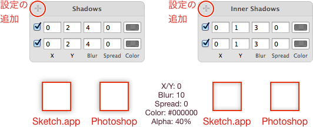
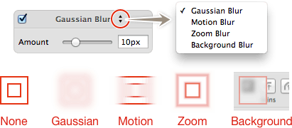
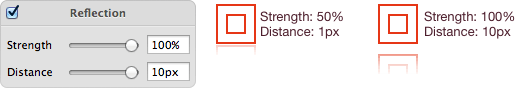

Sketch.app Advent Calender 2013 8日目の記事です。
Sketch.appのインスペクタシリーズ第2弾、スタイリングについてお届けします。
Sketchの基本。というSketch（Sketch 3）の基本操作にフォーカスした電子書籍をリリースしました。詳しくはこちらの「Sketchの基本。」のページをご覧ください。
この記事はSketch 2を元にした記事です。最新版の動作とは異なる可能性が高いため、参考程度にご覧ください。
スタイル設定について
オブジェクトに塗りや線などを設定する項目です。

Fill
オブジェクトに塗りを設定します。＋マークで塗りを追加でき、最大4つまで設定できます。Fill 1から順に重ねられ、チェックマークをオフにすると、一時的にその塗りを適用外にできます。

色の部分をクリックすると、ベタ塗り・グラデーションなどの塗りのタイプを選択できます（これについては後日）。
余白をドラッグして順番を変えたり、枠外に移動させて設定を削除できたりします。
Borders
オブジェクトに線を設定します。こちらも少なくとも20以上は重ねて設定ができます。チェックマークをオフにすると、一時的にその線を適用外にできます。

ちょっと掴みにくいですが、塗りと同じく余白をドラッグして順番を変えたり、枠外に移動させて設定を削除できたりします。
「Borders」の右にある三角マークでオプションの表示/非表示をします。
Positon
線の描画をパスのどの位置から行うかを設定します。
Size
線の太さを設定します。
Color
線の色を設定します。
Start Arrow / End Arrow
パスの両端を矢印にします。
Ends
パスの両端の描画処理を設定します。
Joins
パスが繋がっている部分の処理を設定します。
Dash / Gap
破線の設定です。
Shadows / Inner Shadows
ドロップシャドウ/インナーシャドウを設定します。こちらも少なくとも10以上は重ねて設定できます。チェックマークやドラッグでの移動・削除は塗り・線と同じです。

一応、Photoshopと同等の設定をして並べてみましたが、ほぼ一緒ですね。
X/Y
シャドウの位置を設定します。正数で右と下、負数で左と上に移動します。
Blur
ボケ脚を設定します。
Spread
ボケ脚の開始部分を調整します。
Color
シャドウの色を設定します。
Blur
タイトルバーの右にある上下三角からぼかしの種類を選択できます。

Gaussian Blur
いわゆる「ぼかし」です。Amountで適用量を設定します。
Motion Blur
設定した方向にぼかします。Amountで適用量を、Angleで角度を設定します。
Zoom Blur
1点に向かってぼかしを適用します。Amountで適用量を、Originで中心点を設定します。
Background Blur
オブジェクトを通して背面のオブジェクトがボケます（iOS7のロック画面から解除のためにスライドさせた感じ）。不透明度などを調整しないとボケているのが見えないかも…
Reflection
選択しているオブジェクトの下に、反射して映り込んだエフェクトを加えます。

Strength
反射しているオブジェクトの大きさを設定します。右に行くほど反射の度合いが大きくなります。
Distance
オブジェクトから反射しているオブジェクトの距離を設定します。右に行くほどオブジェクトが離れます。